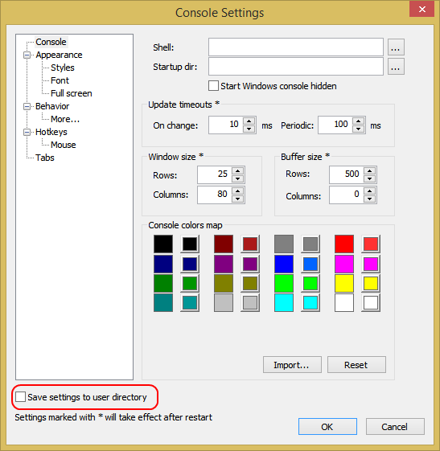

Save settings to user directory
Settings are loaded from user directory by default.
If no settings are found in user directory they are loaded from the ConsoleZ directory.
Setting are by default saved to where they have been loaded.
If for rights reason this is not possible settings are saved to user directory.
If "Save setting to user directory" is checked settings are saved to user directory in any cases.
The user directory is %APPDATA%\console.